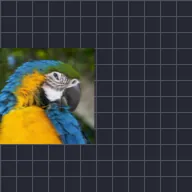

真實動態模糊

依圖層實際移動、旋轉和縮放的路徑產生模糊，如同攝影機快門。快門角度越大，殘影越長；取樣越多，殘影越平滑。未開啟完整模糊時，預覽會顯示較快速的模糊效果。
真實動態模糊的運作方式就像相機快門。快門角度是快門保持開啟的時間：180 度是常見的電影感，360 度則會產生最長的殘影。取樣數是混合的副本數量：數量越多越平滑，但速度越慢。
它會跟隨圖層實際的移動，包括動態特效。除非預覽列中已開啟完整模糊，否則預覽會顯示快速的近似效果。
設定
| 設定項目 | 類型 | 範圍 | 預設值 |
|---|---|---|---|
| 快門角度 | 角度 | 0° 至 360° | 180° |
| 取樣數 | 數字 | 2 至 32 | 8 |